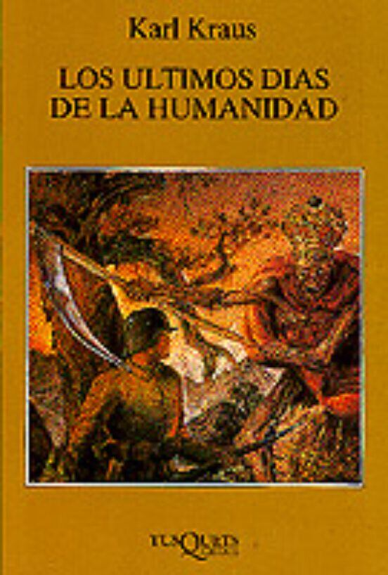
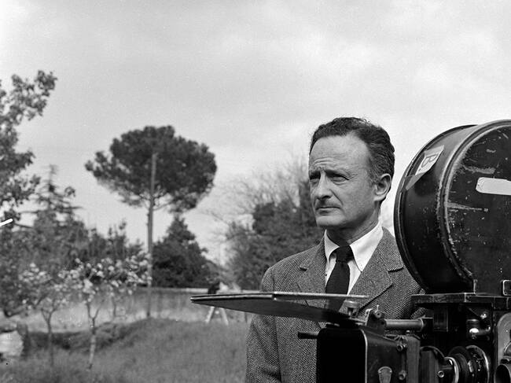
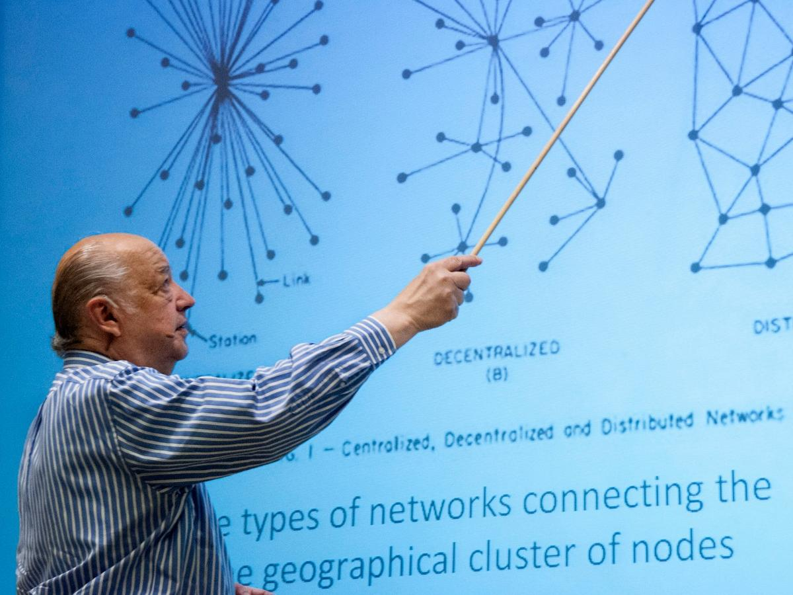

Personas Maravillosas que nacieron el 29 de abril
Henri Poncaire (1854)

Precursor de la teoría del caos, descubrió que pequeñas variaciones en las condiciones iniciales pueden provocar resultados drásticamente diferentes
Karl Kraus (1874)

Kraus elevó el periodismo a una forma de género filosófico y ético. Defendió la pureza del lenguaje como un reflejo del pensamiento
Fred Zinnemann (1907)

Fue un director de cine austriaco reconocido por su inquebrantable compromiso con el realismo, la dignidad humana y la meticulosa dirección de actores
Iwao Takamoto (1925)
Animador clave en clásicos como La Cenicienta, La Bella Durmiente, La Dama y el Vagabundo y 101 Dálmatas.
Paul Baran (1926)

Fue un ingeniero polaco-estadounidense conocido principalmente por inventar la conmutación de paquetes, un diseño de red que daria inicio al internet como lo conocemos
Ray Baretto (1929)
Musico y productor, actuando como un puente entre el jazz, la música afrocaribeña y el nacimiento de la salsa
Alejandra Pizarnik (1936)
"Señor Tengo veinte años También mis ojos tienen veinte años Y sin embargo no dicen nada Señor He consumado mi vida en un instante La última inocencia estalló Ahora es nunca o jamás o simplemente fue"
Jerry Seinfeld (1954)
Comediante responsable de la creacion de las sitcom, Seinfeld ha perfeccionado el estilo de comedia, enfocándose en los pequeños detalles molestos o absurdos de la vida diaria
Uma Thurman (1970)

Actriz, icono del cine de Tarantino, precursora de personajes de la nueva ola del Female Rage
Linda Vanegas (2005)
Escritora, compositora, diseñadora y una de las mejores personas que cualquiera tendria la suerte de conocer